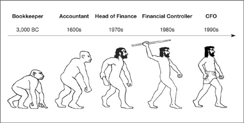
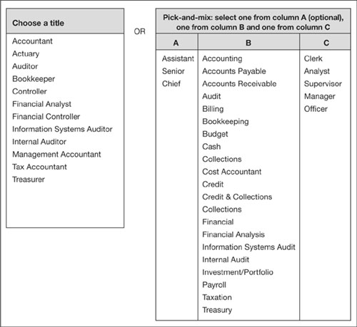
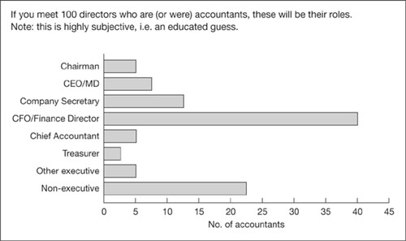

The second oldest profession?
No doubt you have seen pictures of those ancient cave paintings where a bunch of woolly savages are chasing a woolly mammoth off a cliff. You probably noticed that the stick figure at the back was an accountant.
The first written use of the term bean counter was in a 1975 Forbes magazine article which referred to ‘a smart, tight-fisted and austere “bean counter” accountant from rural Kentucky’.
As soon as there were things to count, there were beanies. They went by other names back then, given that the first in their trade were probably preoccupied with divvying up woolly mammoth steaks, or counting bushels of grain going into storage for leaner days. All that tallying and remembering was tricky and prone to later argument, so it is quite possible that accountants had a significant hand in the invention of the written word. Indeed, with such a long history they have had plenty of time to develop a rich jargon which has developed almost into a separate language – one that is up there with Egyptian hieroglyphics, Ancient Greek and Gibberish.
When you see letters after a beanie’s name, a C usually stands for certified or chartered, a P for public, and A, well, take a wild guess. You sometimes see M for management.
In the US and many countries in Asia the most common beanie designation is CPA – certified public accountant.
British beanies are usually CAs (chartered) or CCAs (chartered and certified).
In addition to beanie-speak, accountants have built an impressive system of qualifications and a range of job titles that would make anyone proud. Most remarkable, perhaps, is their unique level of optimism. Apparently they do not have any. Presumably this comes from handling other people’s money all the time.
Pessimism can be learned
When you chat with your finance director, you’ll probably get the impression that he is a born pessimist. This may not be the case. The pessimism could well have been learned during accountancy training. Finance directors and the people they surround themselves with are, not surprisingly, mostly accountants by training – birds of a feather, so to speak. Anthropologists must find this an interesting group of people.
How accountants are made
Almost every country regulates bean counters, either through government bodies or professional institutes. Generally, anyone can call himself or herself an accountant, but only beanies who have completed specific professional training can put the appropriate letters, such as CPA, after their name and call themselves certified or chartered accountants.
Accountants increasingly complete a formal education to at least degree level before beginning their professional qualification (the US is generally pretty fussy in requiring an undergraduate degree, although the UK and many other countries are more flexible). Given their bent, many wannabe beanies will have studied finance or business, although this is not normally a prerequisite. They usually begin their formal professional training only after they start work as powder monkeys.
Generally, the bodies that award accountancy qualifications insist that candidates are engaged in approved on-the-job training while they study. Money-minded people who are not in finance-related work are usually barred from taking accountancy examinations. Even financial geniuses cannot walk into suitable employment and sit the examinations right away. There are strict timescales laid down to ensure that would-be accountants have been stacking and polishing beans for long enough to be able to do so blindfolded. (Most states in the US require two years’ experience; many other countries require three years on-the-job training. Would-be beanies in Thailand have to put in at least 3,000 hours before qualifying.)
The P in CPA indicates that the accountant can sell services to the public. It is tempting to make a quip about selling their souls or prostituting their services, but I will refrain.
Anyway, after several years, and several sets of rigorous examinations, those dedicated enough to complete the training become qualified accountants. Three interesting points about this training are worthy of mention.
‘It doesn’t hurt to be optimistic. You can always cry later.’
—Lucimar Santos de Lima
1. Machiavelli apply here
Would-be accountants have to find employment where they are provided with on-the-job training. Very small companies do not employ their own accountants. Slightly larger companies do, but they cannot justify or support the cost of having trainees cluttering up the place and eating into the finance chief’s time. The consequence is that wannabe bean counters have to start their careers in bigger ponds.
Big ponds have a unique culture and political structure which imprints itself on financial fledglings at the very time when they are most impressionable – when they are waddling around behind mother duck carrying the printouts and carefully learning how best to advance their own careers.
The culture and politics of big business is a fascinating topic. Large organizations are usually highly structured with a clearly defined hierarchy. Important and not-so-important proposals are analysed in excruciating detail before decisions are taken, often by committees. There are also less clearly defined but probably more important pecking orders based on influence and power. By understanding how this works, ambitious executives can flutter over their apparently pre-ordained stopping points and follow an accelerated route into senior management and the board.
Indeed, or perhaps because, white-collar life can be so deadly dull at times, playing this promotion game can become a major preoccupation. Is it possible that executives sometimes make decisions based first on ‘what this means for my career’ and second for the good of the company? Can it become second nature to surreptitiously and ever so nicely peck away at other people’s proposals and performance? Of course, there is one instance when Machiavellians praise others: when something risky needs to be done. If you suddenly find a corporate adversary enthusiastically supporting you, you might want to carefully re-examine your figures. But I digress. The message is that accountancy training by design gives accountants a solid grounding in big-pond decision-making. You must decide for yourself whether this is a good thing or not.
Certified or chartered? It makes little difference to you and me. It’s basically down to snobbish rivalry between what are usually well-established and respectable accounting institutes.
2. No turtles
My second point relates to the nature of accountancy study courses and examinations. All the topics are somewhat structured and mechanical. They include a smattering of mathematics and statistics, some law relating to corporations, taxation, and so on, and a whole bundle of stuff about bookkeeping, accounting and finance. There is no time for the metaphysical. It is logic and mechanics all the way down. To start accountancy training requires a certain way of thinking. To complete the course requires a lot more of the same.
By the time that accountants order nameplates with CPA or whatever after their name, they will have totally forgotten how to make decisions on instinct – if they ever did know. Accountants are, quite properly for their profession, indoctrinated with the need for meticulous precision and attention to detail. Everything will be decided by careful analysis of the possible outcomes. And, as already hinted, there will be considerable emphasis on avoiding risk. Whether this is good or bad I will leave for you to decide. I am merely drawing your attention to how the training pushes their thought processes in a particular way.
The International Federation of Accountants (IFAC), working to harmonize standards in the profession, has 160 member bodies in 120 countries, representing 2.5 million bean counters.
3. No free spirits
Many brilliant and successful business people are accountants by training, but their approach is necessarily different from that of entrepreneurial risk takers. Accountants are not university dropouts who have built empires as did Bill Gates with Microsoft or Michael Dell with Dell Computers. Those accountants who do create and run big corporations usually do so by following a more conventional approach. If you are a seat-of-the-pants entrepreneur, then before you sit down for coffee with the finance director, think back to the most rigorous subject you studied – preferably from the areas of maths or science. The discussion will not be ‘I have a hunch we’d sell more widgets if we painted them green’. It will be ‘based on empirical evidence from market research by McKindred, with sampling as detailed in this handout, which indicates that we can be 99.5% confident that 3.91% of consumers prefer the colour approximated by Pantone Process 281–1, we could...’.
The US Bureau of Labor projects that between 2004 and 2014 the number of accountants in the US will increase by about one-quarter. This faster than average growth in employment reflects an increase in the number of businesses, changes in financial laws and regulations and increased scrutiny of company finances.
|
What do all these people do?
Beanie titles are evolving rapidly (see Fig. 3.1). For ambitious accountants, the goal these days is to become the chief financial officer (CFO) – the mother duck of all accountants. This title first saw the light of day in the US. Across the Atlantic, the beanie at the top of the pecking order is also known with typical British understatement as the finance director. In smaller companies, or those lagging in the evolutionary process, the position is often termed financial controller (when treasury responsibilities might fall to a different person).
Fig 3.1. The evolutionary process
|
| The CFO, or equivalent, reports to the chief executive officer, keeps the board informed, directs financial plans and policies, and oversees audits, accounting, budgeting, tax, treasury, and anything else that involves beans. |
Reporting to the CFO, there could be a bewildering array of titles (see Fig. 3.2). Most of the titles are fairly self-explanatory. A few that might need elucidation are as follows:
The treasurer manages the corporation’s cash position, ensuring that there is just enough folding stuff to meet daily obligations, and that any excess is not idle but is earning interest somewhere.
Accountants wield extreme power, because they have power of veto. By demonstrating that an idea is not financially viable, they can stop it dead in the water. A good game you can play is to try to prove them wrong.
Accounts receivables and collections people work to ensure that the cash from customers rolls in promptly.
Accounts payable bods basically pay the bills on time so that the lights do not go out.
Anyone with Information in his or her job title is concerned with some aspect of your computer systems.
Bookkeepers maintain the basic financial records.
Auditors try to ensure that everyone is being honest and truthful. Too often, they report direct to the CFO but, for reasons which will become clear in a moment, they should be independent of the finance director and should report directly to the chief executive or the board.
Fig 3.2. The names they call themselves
The way things are going, the list of job titles here probably went out of date while this book was being printed. New designations are being invented almost daily. I have recently come across a forensic accountant (tracking fraud) and a software accountant (valuing software and web applications). Let me know what creative designations you have in your company.
‘An accountant is a man hired to explain that you didn’t make the money you did.’
—Anon.
Variations on a theme
Use of the designations finance and financial varies. Finance director is slightly more common than financial director, but chief financial officer is far more popular than chief finance officer. The term comptroller is also used sometimes – it is a variation on controller, derived from compute.
|
Fig 3.3. Accountants in the boardroom
Watch out for the auditors
It has to be said that auditors can be scary people. Their job is basically to ensure that good finance and accounting procedures are being followed and that no one is quietly dipping their fingers in the till. Auditors do not usually check every last transaction and voucher, but instead they will check a sample of your financial records. Be aware that fraudsters will know this and will often attempt to have the ‘right’ sample reviewed. By the way, just in case sample sounds too lax, bean counters call this a test of the accounts.
Internal auditors
Internal auditors are employed by the company and are, shall I say, generally pretty pernickety. They do not earn beanie brownie points by reporting that there is nothing to report. They make their name according to the number of things that they identify as being wrong. The more nitpicking they do, the faster they will be recognized as Good Chaps and get promoted out of a dull job. They will swoop on you uninvited and unannounced in the hope that the element of surprise will catch out some laxity of ticking boxes and duplicating dockets.
Most stock exchanges require listed companies to conduct internal audits, and there is usually a statutory requirement for an independent external audit.
Watch out. You will be penalized if you or your people are doing something that the auditors think is incorrect, even if no one told you that the company prefers if it is done some other way. For example, a friend once had his knuckles rapped because he signed and countersigned the bank reconciliation report and initialled the corresponding bank statement, instead of signing both. This is a reasonable requirement. But considering that head office gave absolutely no guidance in advance, I think it was a bit unfair that he had to spend a day in the stocks.
|
| When you take over a business unit with accounting or finance responsibilities, insist on either of the following – or preferably both:
|
External auditors
External auditors work for those big public firms that are always in the news and seemingly always changing their names. They are essentially consultants. Remember that consultants earn their money by telling you what you want to hear and, usually, what you already know. Their success is not measured by a scorecard in your internal audit department, but by a fat fee paid to them for doing what they are told to do.
External auditors are concerned more with good practice and compliance with regulations, rather than with the minutiae of internal financial policies. At the broadest level, these financial police are concerned with protecting the interests of shareholders and, essentially, providing an independent opinion on the financial report – which until about now was often prepared by someone else in the auditors’ own firm. All this is changing. Regulators are demanding a greater degree of separation between accounting and auditing, and auditors are treading very carefully.
And then there were four
Following accounting scandals that wiped Andersen off the map in 2002, the Big 4 accounting firms are Deloitte Touche Tohmatsu, Ernst & Young, KPMG and PricewaterhouseCoopers.
This is down from eight in the 1980s: Arthur Andersen, Coopers and Lybrand, Deloitte Haskins and Sells, Ernst and Whinney, Peat Marwick Mitchell, Price Waterhouse, Touche Ross, and Arthur Young.
Second-tier accounting practices are known as Group B.
When an external audit is required, it will be requested by you or your beanies. You will know about it beforehand, and you should ask for a meeting with the auditors before they start. This gives you the chance to find out what they need from you, and to tell them about any areas where you want them to check carefully what is being done by your staff, your accounting and finance department, and your external accountants. Their report will not absolve you from blame, but it will provide a handy third-party check on internal financial and accounting procedures and processes.
|
What is there to be cheerful about?
We have already noted that accountants are not long on optimism. They have been taught to see the financial downside in everything and, in general, ignore the upside. For example, if they become aware of some pressing need to spend money in the future, they will usually insist on showing this in your financial accounts right away. But try getting them to recognize income in advance. That would rank somewhere between getting blood from a stone and walking on water. Indeed, the system of accruals accounting (see Chapter 8) is so-named because it requires accounts to show any commitments to spend money (accrued expenses). Never mind that these same accounts also have to include pre-paid expenses. The system could have been called prepayments accounting, but I am sure you agree that would sound too cheerful. Figure 3.4 outlines the bean counter’s belief system.
A unique jargon
In common with every other discipline, accounting has a mystifying jargon of its own. Your finance people will pepper their sentences with mystifying terms such as contingent liabilities, contra accounts, accruals, net present value, hurdle rate, discount rates and so on. Moreover, there is a surfeit of financial acronyms, some of which we bumped into in Chapter 2. I will attempt to demystify as much of this as possible as we move forward.
To make matters worse, some of the terms have completely the opposite meanings to those which we recognize from everyday life. For example, if you have money in your bank account, your bank statement will have a credit balance. Well, do not be alarmed if your finance director’s notes indicate that the company bank account has a huge debit balance. From a bean counter’s perspective, a debit balance is often good news. This is discussed on p. 102.
‘In a 2003 survey of CFOs, 38% of respondents identified “a positive attitude” as the most important interpersonal skill for accountants. Least important, with just 1% of the vote, was reckoned to be “a sense of humour”.’
—Anon.